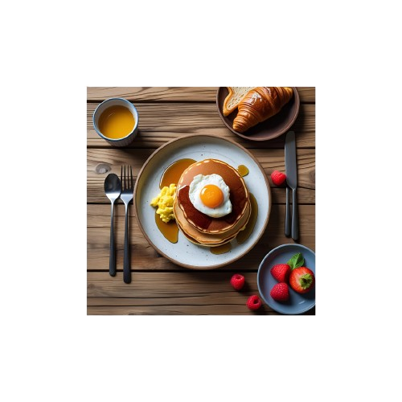

A professionally styled breakfast image featuring a stack of fluffy pancakes topped with a perfectly cooked sunny-side-up egg and drizzled with maple syrup. On the side, there's a portion of creamy scrambled eggs. The setting includes a croissant with toast, a small bowl of fresh berries (strawberries and raspberries), and a cup of orange juice. The scene is shot from a top-down perspective on a wooden surface, giving it a warm, inviting look. Utensils are neatly placed, but the food remains the central focus.
Price:100 E.p